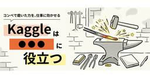
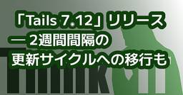
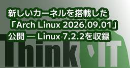
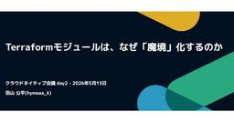
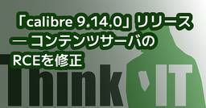
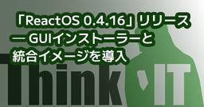
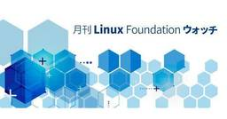
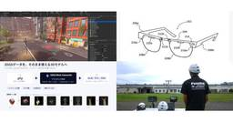
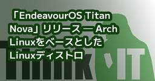
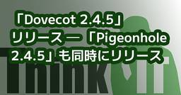

Think IT（シンクイット）
https://thinkit.co.jp/
【Think IT】“オープンソース技術の実践活用メディア” をスローガンに、インプレスグループが運営するエンジニアのための技術解説サイト。開発の現場で役立つノウハウ記事を毎日公開しています。
フィード
「OpenVPN 2.7.7」リリース ─ 信頼性レイヤーの強化など
Think IT（シンクイット）
「OpenVPN 2.7.7」リリース ─ 信頼性レイヤーの強化など Windows関連の問題を中心に、LinuxのNetlink処理も強化kawahara2026年9月5日シェア ポスト はてブ 優先するニュース提供元に追加 OpenVPN communityは9月3日(現地時間)、オープンソースのVPNソフトウェア「OpenVPN 2.7.7」をリリースした。 OpenVPNは、SSL/TLSを利用して安全な通信経路を構築するVPNソフトウェア。クライアント／サーバー型のVPNや拠点間接続などに利用でき、Windows、Linux、macOS、BSDなどに対応する。 「OpenVPN 2.7.7」のハイライトは次の通り。 「OpenVPN 2.7.7」は、Webサイトから入手できる。(川原 龍人/びぎねっと)[関連リンク]リリースノートOpenVPN Community Editionダウンロード この記事をシェアしてください シェアする ポストする >ブクマする noteで書く 優先するニュース提供元にThink ITを追加 前の記事「Tails 7.12」リリース ─ 2週間間隔の更新サイクルへの移行も 関連記事この記事の筆者 kawahara kawaharaのプロフィールを見る 筆者の人気記事 「Linux Mint 22.3」、Linux 7.0搭載HWE ISOを公開8月11日 0:05 「Armbian 26.8」リリース ─ Linux 7.1と全面刷新したインストーラを採用8月27日 23:22 「Ubuntu 26.04.1 LTS」リリース ─ 8月25日までのアップデートを反映8月28日 21:40 「GNU Linux-libre 7.2」リリース ─ AMD、Qualcomm、Intel関連ドライバのdeblob処理を更新8月21日 0:33 「ReactOS 0.4.16」リリース ─ GUIインストーラーと統合イメージを導入8月31日 13:59 「SparkyLinux 8.4」リリース ─ 32bit PC向けISOを復活8月11日 23:28 業界情報やナレッジが詰まったメルマガやソーシャルぜひご覧くださいメルマガ Facebook X(エックス) BlueSky Googleニュース RSS Think ITでは、技術情報
41分前

「Ubuntu 26.04.1 LTS」リリース ─ 8月25日までのアップデートを反映
Think IT（シンクイット）
「Ubuntu 26.04.1 LTS」リリース ─ 8月25日までのアップデートを反映 24.04 LTSからの自動アップデートは数週間後kawahara2026年8月28日シェア ポスト はてブ 優先するニュース提供元に追加 Ubuntu Teamは8月27日（現地時間)、Linuxディストリビューション「Ubuntu 26.04.1 LTS」をリリースした。 「Ubuntu 26.04.1 LTS」は、2026年4月に公開された長期サポート版「Ubuntu 26.04 LTS（Resolute Raccoon)」のポイントリリース。初回リリース以降に提供されたセキュリティ更新や重要な不具合修正を統合した、新しいインストールメディアが提供される。なお、Ubuntu 26.04をすでに利用している場合、通常のシステム更新を適用していれば26.04.1相当の状態となる。既存環境はアップグレードのコマンドを施すことで26.04.1相当の状態になるが、自動アップグレードは数週間後になる。安定性を重視する場合、自動アップグレードの適用を待つことが推奨されている。 「Ubuntu 26.04.1 LTS」のハイライトは次の通り。 また、本リリースと同時に、「Kubuntu 26.04.1 LTS」「Ubuntu Budgie 26.04.1 LTS」「Lubuntu 26.04.1 LTS」「Ubuntu Kylin 26.04.1 LTS」「Ubuntu Studio 26.04.1 LTS」「Xubuntu 26.04.1 LTS」「Edubuntu 26.04.1 LTS」「Ubuntu Cinnamon 26.04.1 LTS」もリリースされた。 「Ubuntu 26.04.1 LTS」は、Webサイトからダウンロードできる。(川原 龍人/びぎねっと)[関連リンク]リリースアナウンスリリースノート この記事をシェアしてください シェアする ポストする >ブクマする noteで書く 優先するニュース提供元にThink ITを追加 前の記事「Armbian 26.8」リリース ─ Linux 7.1と全面刷新したインストーラを採用 次の記事「Dovecot 2.4.5」リリース ─ 「Pigeonhole 2.4.5」も同時にリリース 関連記事この記事の筆者 kawah
8日前

Kaggleは「今いる場所で成長する」のに役立つ ー社内コンペ・育成制度・会場提供、DSが組織を動かすまで
Think IT（シンクイット）
はじめに「Kaggleって、転職に有利なんでしょ?」データ分析の世界に少し触れたことがある人なら、一度はそんな話を聞いたことがあるかもしれません。実際、この連載でも転職やキャリアチェンジのストーリーが続いてきました。でも、私の場合は少し違います。私にとってKaggleは「転職のため」ではなく、「今いる会社の中で自分のキャリアを育てるため」に、何度も背中を押してくれた存在でした。データサイエンティスト(以下、DS)としてのスキル獲得に寄与したことはもちろんですが、気づけば私のキャリアの節目にはいつもKaggleがありました。この記事では、社会人12年目の私がたどってきた道を振り返りながら、「Kaggleは社内のキャリア形成に役立つ」という話をしてみたいと思います。怖くて始められなかったKaggleまずは簡単な自己紹介から。私は大学3年～修士2年までの4年間、データ分析を学びました。プログラミングは得意ではないので、ソフトウェアを利用した分析です。新卒でSIerに入社し6年ほど勤めましたが、学生時代にデータ分析を学んでいた経験を活かしたく、社内公募に応募して最後の1年半ほどはデータ分析チームのマネジメントを担当していました。その後、今の会社に転職しました。現職ではかれこれ6.5年、一貫してDSとしてお客様の業務課題をデータで解決する仕事をしています。実は、大学時代からKaggleの存在自体は知っていました。ただ、当時の私には飛び込む勇気がなく、世界中の猛者が集まる場所に「自分なんかが…」とためらっているうちに、時間だけが過ぎていきました。今思えば、もったいない話です。転職した直後、私は壁にぶつかります。周囲に比べて、自分のデータサイエンスのスキルが明らかに足りない。Kaggleは未経験、知り合いもいない。そんな状態でした。転機になったのは、「第1回 関西Kaggler会」。といっても、当時はただの飲み会です(笑)。それでも、思い切って参加したことが、私とKaggleの本当のスタートになりました。「手を動かす」ことで、土台ができた転職後の最初の3年間は、ひたすらコードを書く担当者の時期でした。ここでKaggleが効いてきます。コンペを通して身についた分析の進め方と、数えきれないほどの手法。教科書だけでは決して得られない「生きた知識」は、お客様が求める精度を出すための確かな
2日前

MySQLの「ST_Within()」「ST_Contains()」関数でジオメトリの包含関係を判定してみよう
Think IT（シンクイット）
はじめに前回は「ST_Length()」関数を使って、LineStringの長さを計測する方法を紹介しました。今回は、あるジオメトリが別のジオメトリの中に含まれているかを判定する「ST_Within()」関数と、その逆の視点で判定を行う「ST_Contains()」関数を紹介します。「この学校はどの市にあるか」「この市内にある駅はどれか」といった、位置関係の判定に欠かせない関数です。ST_Within()の基本ST_Within(A, B)は、ジオメトリAがジオメトリBの中に完全に含まれていれば 1(TRUE)を、そうでなければ 0(FALSE)を返す関数です。まずはデカルト座標でシンプルな例を見てみましょう。mysql> SET @point = ST_GeomFromText('POINT(0.4 0.7)');mysql> SET @polygon = ST_GeomFromText('POLYGON((0 0, 0 1, 1 1, 1 0, 0 0))');mysql> SELECT ST_Within(@point, @polygon);+-----------------------------+| ST_Within(@point, @polygon) |+-----------------------------+| 1 |+-----------------------------+1 row in set (0.000 sec)点(0.4, 0.7)は(0,0)-(1,1)の正方形の中に含まれているので、1(TRUE)が返ります。ポリゴンの外にある点でFALSEが返ることも確認しておきましょう。mysql> SET @point = ST_GeomFromText('POINT(1.2 0.8)');mysql> SET @polygon = ST_GeomFromText('POLYGON((0 0, 0 1, 1 1, 1 0, 0 0))');mysql> SELECT ST_Within(@point, @polygon);+-----------------------------+| ST_Within(@point, @polygon) |+-----------------------------+| 0 |+----------
2日前

「Tails 7.12」リリース ─ 2週間間隔の更新サイクルへの移行も
Think IT（シンクイット）
「Tails 7.12」リリース ─ 2週間間隔の更新サイクルへの移行も Tor Browser 15.0.21とElectrum 4.8.1を収録、Firefoxの重要な脆弱性も修正kawahara2026年9月4日シェア ポスト はてブ 優先するニュース提供元に追加 Tails teamは9月3日(現地時間)、匿名性とプライバシー保護を重視したLinuxディストリビューション「Tails 7.12」をリリースした。 「Tails」は、USBメモリなどから起動し、インターネット通信をTorネットワーク経由で行うLinuxディストリビューション。利用したコンピュータへデータを残さないことを基本とし、必要なデータのみ暗号化されたPersistent Storageへ保存できる。 「Tails 7.12」は、Firefoxのリリース間隔短縮に合わせて導入された、2週間間隔の更新サイクルによる最初のリリースに当たる。TailsはFirefoxをベースとしているため、同じ間隔のサイクルを取り入れる。 「Tails 7.12」のハイライトは次の通り。 「Tails 7.12」は、Webサイトから入手できる。(川原 龍人/びぎねっと)[関連リンク]リリースアナウンスBlogによる記事Blogによる記事(Tor Browser 15.0.21) この記事をシェアしてください シェアする ポストする >ブクマする noteで書く 優先するニュース提供元にThink ITを追加 前の記事新しいカーネルを搭載した「Arch Linux 2026.09.01」公開 ─ Linux 7.2.2を収録 次の記事「OpenVPN 2.7.7」リリース ─ 信頼性レイヤーの強化など 関連記事この記事の筆者 kawahara kawaharaのプロフィールを見る 筆者の人気記事 「Linux Mint 22.3」、Linux 7.0搭載HWE ISOを公開8月11日 0:05 「Armbian 26.8」リリース ─ Linux 7.1と全面刷新したインストーラを採用8月27日 23:22 「Ubuntu 26.04.1 LTS」リリース ─ 8月25日までのアップデートを反映8月28日 21:40 「GNU Linux-libre 7.2」リリース ─ AMD、Qualcomm、Intel関連ド
2日前

【AIエージェント時代の新資格】AIエージェント・ストラテジストから見える「これから求められる人材」
Think IT（シンクイット）
はじめに本連載は、生成AIコミュニティ「IKIGAI lab.」で活動しているメンバーが、それぞれの視点から、AIの変化と実務への示唆を発信しています。生成AIの活用がビジネス領域において本格化する中、理論と実践の両面から、最新の知見に基づいた実践的な情報をお届けします。生成AIの普及とともに、AIについて体系的に学ぶための資格も増えてきました。JDLA（日本ディープラーニング協会）の「G検定」や、GUGA（生成AI活用普及協会）の「生成AIパスポート」は、その代表例です。前者はAI・ディープラーニングの活用リテラシー、後者は生成AIの基礎とリスクを扱います。ただ、AIを仕事に組み込む段階に入ると、「知る」「安全に使う」だけでは足りなくなります。そこで登場したのが、2026年に始まった一般社団法人AICX協会の「AIエージェント・ストラテジスト」です。この資格は、その先、つまりAIエージェントの企業実装を担う人材を認定するものとして位置づけられています。第1回試験は2026年7月に実施されました。【参照】「AIエージェント・ストラテジスト」（一般社団法人AICX協会）「AIエージェント・ストラテジスト」の試験範囲は、仕組みの理解にとどまりません。業務プロセスの分析、ユースケース選定、ガバナンス、KPI設計、組織への導入・定着までが幅広く扱われます。ではなぜ、AIの資格で「仕事の設計」まで学ぶ必要があるのでしょうか。今回は、既存のAI関連資格との違いを整理しながら、「AIエージェント・ストラテジスト」の中身を見ていきます。AI資格の違いは「役割」にあるまず、代表的なAI関連資格を比べてみます。G検定は、AI・ディープラーニングの活用リテラシーを問う検定です。AIで何ができるのか、どのようなシーンで活用できるのか、活用のために何が必要なのかを、120分・約145問の試験を通じて体系的に確認します。生成AIパスポートは、生成AIの基礎知識や活用方法に加え、個人情報、著作権、情報漏洩などのリスクを扱います。2026年2月試験からのシラバスでは、RAGに加えてAIエージェントの仕組みやツール事例、MCPによる外部連携も学習項目に加わりました。【参照】「生成AIパスポート、2026年試験のシラバス改訂および資格更新テストのリニューアル開催のお知らせ」（GUGA 2025年10月
3日前

「エージェント型AIは今どこにいるのか」――Gartnerが示す2026年ハイプ・サイクル、フィジカルAIとともに「過度な期待」のピーク期
Think IT（シンクイット）
📌 このニュース、3行で押さえるなら 📌ガートナージャパンが「2026年の日本における未来志向型インフラ・テクノロジのハイプ・サイクル」を発表。エージェント型AI、フィジカルAI、マシン・カスタマー、自動運転トラックなどの革新的テクノロジを含む7項目が「過度な期待」のピーク期に位置付けられた2026年版では、AIが企業のビジネスの在り方に大きな影響を与えていることから、新たな時代のインフラ・テクノロジとして捉える範囲を拡大しているエージェント型AIは発展途上にあり、すべてが自律的に置き換わる段階には至っていないため、現実的には人間とエージェントが連携しながら業務を遂行する形が主流になるとしている📝 Think IT編集部の見解 📝エージェント型AIが「過度な期待」のピーク期に置かれたことを、どう受け取るかが分かれ目になる。ハイプ・サイクルにおけるピーク期は、期待が実力を上回っている状態を指す。この先には幻滅期が控えており、期待外れの事例が積み上がる局面が来る。ただしGartnerの方法論において幻滅期は技術の終わりではなく、実用に耐えるものだけが残る選別の過程である。ピーク期という位置づけは「まだ早い」という警告であると同時に、「これから来る」という予告でもある。実務的に重要なのは、リリースが明言している1点だ。エージェント型AIは発展途上にあり、すべてが自律的に置き換わる段階には至っていない。現実的には人間とエージェントが連携しながら業務を遂行する形が主流になる。これは本連載でここ数か月扱ってきた製品発表とも符合する。NutanixのMCPサーバーはヒューマン・イン・ザ・ループを前提に設計され、GitLab 19.3はエージェントの実行権限を絞る機能を並べた。ベンダー各社が制御機構を作り込んでいる事実そのものが、全面的な自律にはまだ距離があることを示している。もう1点、亦賀忠明氏の指摘は無視できない。フィジカルAIについて「単なる自動化ではなく、人の技能の拡張と役割再設計を前提とすること」が重要だとし、「人とAIを前提にビジネス全体を再設計できるか」で競争優位が決まると述べている。技術導入の巧拙ではなく、業務設計の巧拙が差を生むという主張だ。一方で、ハイプ・サイクルは技術の位置を示すものであって、個別企業がいつ何を導入すべきかを答えるものではない。ピーク期...
3日前

新しいカーネルを搭載した「Arch Linux 2026.09.01」公開 ─ Linux 7.2.2を収録
Think IT（シンクイット）
新しいカーネルを搭載した「Arch Linux 2026.09.01」公開 ─ Linux 7.2.2を収録 archinstall 4.4、systemd 261.2、OpenSSL 3.6.4なども収録kawahara2026年9月2日シェア ポスト はてブ 優先するニュース提供元に追加 Arch Linux Projectは9月1日(現地時間)、「Arch Linux 2026.09.01」を公開した。 「Arch Linux」は、必要なソフトウェアを利用者が選択して構築する、シンプルさとカスタマイズ性を重視したLinuxディストリビューション。ローリングリリース形式を採用しており、リリースにおけるバージョン番号を持たない。「Arch Linux 2026.09.01」の「2026.09.01」は、2026年9月1日現在のArch Linuxシステムという意味であり、バージョン番号ではない。 「Arch Linux 2026.09.01」では、Linuxカーネルが7.1.5から「Linux 7.2.2」にアップデートされた。ISOイメージに収録されたカーネルパッケージのバージョンは「7.2.2.arch1-1」。 対話型インストーラの「archinstall」は4.4-1へ更新された。システムの初期化やインストールに使用するarch-install-scripts、ファームウェア、暗号ライブラリ、ネットワークツールなども、ISO作成時点の最新版が収録されている。その他、収録された各種ソフトウェアのバージョンがアップデートされている。 「Arch Linux 2026.09.01」は、Webサイトから入手できる。(川原 龍人/びぎねっと)[関連リンク]リリースアナウンス この記事をシェアしてください シェアする ポストする >ブクマする noteで書く 優先するニュース提供元にThink ITを追加 前の記事「Rust Coreutils 0.11.0」リリース ─ 新しいエラー診断を導入 次の記事「Tails 7.12」リリース ─ 2週間間隔の更新サイクルへの移行も 関連記事この記事の筆者 kawahara kawaharaのプロフィールを見る 筆者の人気記事 「Linux Mint 22.3」、Linux 7.0搭載HWE ISOを公開8月11日 0:05
3日前
「FAPI 2.0」に準拠した、よりセキュアな認可フローを「Keycloak」で実装しよう
Think IT（シンクイット）
はじめに前回の第4回では、最新のMCPの認可仕様について解説し、Keycloakを用いてその仕様に沿った認証・認可フローを実装する方法について解説しました。第5回となる今回は「FAPI」というセキュリティプロファイルを用いた、よりセキュアな認証・認可フローを実現するための技術仕様について解説し、Keycloakを用いてその仕様に沿ったフローを構築する方法について解説します。「FAPI 2.0」についてFAPIとは、OAuth 2.0およびOpenID Connectの仕様をベースとして、金融・医療・公共サービスなど機密性の高いデータを安全に扱うため、より厳格なセキュリティ要件を定義したセキュリティプロファイル(仕様の組み合わせ)です。FAPIには複数のプロファイルが存在しますが、近年の主流はFAPI 2.0 Security Profileです(以降、“FAPI”という表現はこのセキュリティプロファイルを指すこととします)。このプロファイルが要求する仕様を満たすために、第3回で解説したOAuth 2.1の仕様に追加する必要のある主な要件を以下に示します。PAR(Pushed Authorization Request)の必須化通常のOAuthでは、認可リクエストは/authorize?scope=...&redirect Uri=...のようにブラウザからURLで送られます。このように、ブラウザやURL上に認可リクエストの内容が露出すると、パラメータの改ざんや漏えいのリスクがあります。これに対し、FAPIでは「PAR」を必須化しています。PARとは、クライアントが認可リクエストの内容を事前に認可サーバへ送信し、その内容を参照するためのrequest_uriをクライアントに返却する仕組みです。認可サーバは受け取ったリクエストを保存しておき、クライアントへrequest_uriを返却します。その後、ブラウザ経由の認可リクエストでは、クライアントはリクエスト内容そのものではなくrequest_uriのみを認可エンドポイントへ渡します。これにより、認可リクエストの詳細がブラウザやURL上に露出せず、パラメータ改ざんや情報漏えいのリスクを低減できます。Sender-Constrained Token (トークン盗難対策)従来のOAuthでは、Bearerトークンは「持っている
4日前

【クラウドネイティブ会議】「誰も触りたくないTerraform」を生まないために――利用者と管理者で変わるモジュール設計
Think IT（シンクイット）
クラウドネイティブ会議のセッション「Terraformモジュールはなぜ『魔境』化するのか」では、株式会社スリーシェイクのSREである羽山公平氏が、モジュールが複雑化する原因と設計指針を解説した。重複を減らすために作ったモジュールも、要件に応じて変数や条件分岐を増やせば、内部を読まなければ何が作られるのかわからない状態に陥る。羽山氏はDRY原則の誤解と利用者を考えない設計を問題として挙げ、ホワイトボックスとブラックボックスを使い分ける方法を示した。再利用しやすくするための善意が、モジュールを複雑化させる「Terraformモジュールは、なぜ『魔境』化するのか」と題して登壇したのは、スリーシェイクのSRE、羽山公平氏である。羽山氏は冒頭、会場の聴衆にTerraformやTerraformモジュールを利用しているかを問いかけ、多くの参加者が手を挙げるようすを確認した。本セッションで扱うのは、すでに複雑化したモジュールをきれいに修正する方法ではない。これからモジュールを作る人や、なぜモジュールが使いづらくなるのか疑問を持つ人に向けて、魔境化する原因と、その向き合い方を示すことが目的である。では「魔境」とはどのような状態なのか。羽山氏は大量のvariableが定義され、countなどによってリソースが動的に生成される結果、モジュール内部の処理を読まなければ、何が作られるのかわからなくなった状態と説明した。その出発点は、多くの場合、合理的に見える判断である。例えば、複数のS3バケットを作成する際、同じリソースを毎回記述するのは避けたい。そこで、ログ用やデータ用などに共通して使えるS3モジュールを作成する。 しかし利用が広がるにつれて、「ログを保存するならライフサイクルを設定したい」「コンテンツ配信に使うならバージョニングを有効にしたい」「暗号化やレプリケーションにも対応したい」といった要求が加わる。そのたびに変数やフラグが追加され、モジュールが管理するリソースも動的に増減するようになる。作成者は、要件ごとに異なるリソースや依存関係を管理しなければならない。一方で利用者も変数を指定するだけでは最終的に何が作られるのかを判断できず、モジュール内部を確認する必要がある。羽山氏は、コミュニティで広く利用されるVPCモジュールにも多数の変数があり、NAT Gatewayの設定だけでも複数
4日前
「Rust Coreutils 0.11.0」リリース ─ 新しいエラー診断を導入
Think IT（シンクイット）
「Rust Coreutils 0.11.0」リリース ─ 新しいエラー診断を導入 28コマンドに対応、PGOによる高速化とGNU互換性の改善もkawahara2026年9月2日シェア ポスト はてブ 優先するニュース提供元に追加 uutils projectは8月31日（現地時間）、「Rust Coreutils 0.11.0」をリリースした。 「Rust Coreutils」は、GNU Coreutilsに含まれる基本的なコマンドをRustで再実装するオープンソースプロジェクト。GNU Coreutilsとの互換性を維持しながら、クロスプラットフォーム対応、安全性、性能の向上を進めている。 「Rust Coreutils 0.11.0」では、コンパイラのようにエラーの発生箇所を示す診断機能が導入された。また、プロファイルに基づく最適化、GNUとの互換性向上、シンボリックリンクやTOCTOU競合状態に関する安全性の強化などが行われている。 「Rust Coreutils 0.11.0」のハイライトは次の通り。 従来のUnixコマンドは、エラーが発生すると標準エラー出力へ短いメッセージを表示していた。今回、Rust Coreutilsでは、入力された引数を再表示し、問題がある文字や範囲をキャレットで示す診断機能を導入した。利用可能な構文や修正候補も併せて表示される。描画には、Rust向け診断表示ライブラリ「ariadne」が使用されている。この機能は、標準エラー出力が端末へ接続されている場合にのみ既定で有効となる。スクリプト、パイプ、テスト環境では従来通り1行のエラーメッセージが出力され、終了コードも変更されない。このため、エラーメッセージを処理する既存のスクリプトとの互換性が維持される。 新しい診断機能は、今後uutilsのfindutilsやsedにも導入される予定。 環境変数「UUTILS_DIAG」には「always」「never」「auto」を指定できる。「always」ではファイルやパイプへ出力する場合も詳細な診断を表示し、「never」では端末上でも従来形式のメッセージを使用する。 「Rust Coreutils 0.11.0」は、GitHubから入手できる。(川原 龍人/びぎねっと)[関連リンク]Release(GitHub)uutils coreu
4日前
「GitHub Copilot」、法人向け課金とポリシーを変更 ─ チャット保持期間も延長
Think IT（シンクイット）
「GitHub Copilot」、法人向け課金とポリシーを変更 ─ チャット保持期間も延長 座席料金を前払いへ、コードレビューの既定値は「Balanced」に変更kawahara2026年9月1日シェア ポスト はてブ 優先するニュース提供元に追加 GitHubは8月28日(現地時間)、AIコーディング支援サービス「GitHub Copilot」のポリシーおよび課金方法を変更すると発表した。 今回発表されたのは、Copilot BusinessおよびCopilot Enterpriseの課金、GitHub.comとGitHub MobileにおけるCopilotのポリシー、Copilotコードレビューの既定設定に関する変更。9月1日から段階的に適用される。 「GitHub Copilot」は、ソースコードの補完や生成、技術的な質問への回答、コードレビューなどを支援するAIサービス。個人向けのほか、組織向けのCopilot BusinessおよびCopilot Enterpriseが提供されている。GitHubは4月22日から、Copilot BusinessおよびCopilot Enterpriseの新規セルフサービス購入を一時的に停止していた。9月1日から、クレジットカードまたはPayPalで支払う新規顧客を対象に申し込みを再開する。新しいシートを割り当てる場合は、利用者がCopilotへアクセスする前に支払いが必要となる。既存顧客についても、クレジットカードまたはPayPalで支払っている場合、10月1日から請求サイクル開始時に割り当て済みシートの料金が請求される。月の途中で追加したシートは、従来通り割り当て日から請求期間末までの日割り計算となる。 9月28日以降には、GitHub.comのCopilot Chat、GitHub MobileのCopilot Chat、GitHub Copilotクラウドエージェントが単一のCopilot体験へ統合され、個別に設けられていたポリシーも一本化される。統合されたCopilot体験は既定で有効となる。ポリシーを無効にした場合、GitHub.comおよびGitHub MobileでCopilotを利用できなくなるため、管理者は事前に設定を確認する必要がある。 GitHub.comのCopilotは、クラウドエージェントで
4日前
数式なしでスラスラ読める機械学習の入門書！『じわじわわかる機械学習 データ分析・AIアルゴリズムのなかみ』を5名様にプレゼント！
 1
1
Think IT（シンクイット）
数式なしでスラスラ読める機械学習の入門書！『じわじわわかる機械学習 データ分析・AIアルゴリズムのなかみ』を5名様にプレゼント！nishi-d2026年9月1日 Think ITで実施している読者プレゼント企画です。ご応募お待ちしています。 シェア ポスト はてブ 優先するニュース提供元に追加 今すぐ応募する! 著者：橋本 泰一 著価格：2,860円（税込）ページ数：368ページ出版社：インプレスISBN：9784295024224書籍を詳しく調べる 目次第1章 機械学習とは？ 〜コンピュータはデータから学ぶ〜 第2章 機械学習の手順 〜コンピュータが賢くなる手順〜 第3章 教師あり学習 ～正解を教えてもらって、少しずつ賢くなる学び方～ 第4章 ニューラルネットワーク 〜脳みそのモノマネ〜 第5章 教師なし学習 〜正解がなくても、自分で見つける力〜 第6章 強化学習 〜七転び八起き、実践から学ぶ〜1冊目に読みたい機械学習の超入門。数式なしで基礎がわかる！ 本書は、数学が苦手な方や新人エンジニア向けに、機械学習の基礎を数式を使わず図解中心で解説した超入門書です。教師あり・なし学習の基本から、次元削減、ディープラーニング、強化学習といった重要トピックを網羅。モデル評価や倫理などの実践的側面にも触れており、高校生でも理解できる平易な表現で全体像を把握できます。知識ゼロから次世代のAIスキルを身につけたい方の最初の一冊として最適な内容です。プレゼント応募要項応募締切2026年9月28日（金）17:00当選者数5名様応募方法下記応募フォームに必要事項をご記入して応募をお願いします。当選者の発表はプレゼントの発送をもって代えさせていただきます。 現在 開始 応募内容の確認 完了 必須フィールドを示します 応募者 姓 名 メールアドレス お勤め先 会社名 ない場合は「フリー」とお書きください 部署名 ない場合は「なし」とお書きください 役職 ない場合は「なし」とお書きください 郵便番号 ハイフンをいれてください例：101-0051 都道府県 住所 例：千代田区神田神保町1-105 ビジネス利用の電話番号 携帯電話推奨Think ITのメールマガジン はい すでに購読している 「購読する」にチェックをすると、Think ITの最新情報が受け取れます。メルマガについて詳しくはThin
5日前
「1日1回限定のガチャ」を20連できてしまう ― ゲームAPIで頻出するTOCTOUとその対策
Think IT（シンクイット）
株式会社ステラセキュリティ代表の小竹(@tkmru)です。2026年3月19日に開催された勉強会「TECH BATON in 東京 〜ゲームアンチチートに学ぶ セキュリティ設計と攻防の舞台裏 〜 - connpass」にて、「10分で知る ゲームが『チートされる』仕組み 〜通信・API・メモリから見る攻撃と防御〜」というタイトルで発表しました。スライドは Speaker Deck で公開しています。本記事では、登壇内容のうち「ゲームサーバにおける API の脆弱性」のパートから、特にゲームアプリでよく見かける TOCTOU(Time of Check to Time of Use)という脆弱性に絞って解説します。 TOCTOU は厳密にはゲーム特有の脆弱性ではありません。一般的な Web アプリケーションや OS レベルの処理でも発生しうる古典的な競合状態の問題です。しかし、ゲームには「1日1回限定ガチャ」「イベント期間中 N 回まで受け取れる報酬」「スタミナ消費」など、回数制限を前提とした機能が多いため、TOCTOU が起きやすい箇所も多く、実際の脆弱性診断でもよく見つかります。 想定シナリオ ― 1日1回限定のガチャ API次のような仕様の API を例に考えます。エンドポイント: 1日1回だけ引ける限定ガチャサーバは「ユーザごとの残り回数」を DB に保持ガチャを引くたびに残回数を1減らすごく素朴にサーバ側の処理を書くと、以下のような流れになります。DB から残回数を読む残回数 > 0 ならガチャを実行し、報酬を付与する残回数を1減らして DB に書き戻す一見、問題なさそうに見えます。しかし、この実装は 同時に複数のリクエストを送られると破綻します。攻撃方法 ― 同時並列リクエスト攻撃者は単純に、同じ API に対して複数のリクエストをほぼ同時に並行送信します。curl を並列実行する、Burp Suite の Turbo Intruder などのツールを使う、といった方法で簡単に再現できます。 ゲームの脆弱性診断の現場で特に便利なのが、DeNA が OSS として公開している PacketProxy の send x 20ボタンです。PacketProxy は HTTP/HTTPS だけでなく TCP/UDP 上の任意のプロトコル(ゲーム独自の暗号化通信プロ
5日前

侵入の4分の1は「EDRが入っていない端末」から――国内405社調査が示す、守っているつもりの逆転構造 2
Think IT（シンクイット）
📌 このニュース、3行で押さえるなら 📌サイバーリーズンが国内405社を対象としたセキュリティ成熟度ベンチマーク診断の結果を発表。NIST CSF 2.0の6機能のうち「検知」は平均2.86、「防御」は平均2.56である一方、自社の公開資産やアタックサーフェスを把握できているかを示す「特定」は平均1.99と最も低い水準にとどまった同社グローバルSOCが2026年1月〜7月に観測した重大インシデント寸前の事案を分析したところ、根本原因は「EDRを導入済みでありながら一部のEDR未導入端末が攻撃された」と「外部公開サーバーの脆弱性を突かれた」がそれぞれ25.0%で最多となった「特定」スコアを回答者の所属部門別に見ると、事業現場部門は平均2.57、情報システム部門は平均1.86で0.71ptの開きがあった。実態を把握している情報システム部門ほど自社を厳しく評価しており、両者の認識のずれが浮かび上がっている📝 Think IT編集部の見解 📝数字の並びが示しているのは、投資の順序が現実と逆になっているという構図だ。検知2.86、防御2.56に対して特定1.99。守るための道具は買ったが、何を守るのかを把握していない。順序として本来は逆であるはずだが、製品カタログに載っているのは検知と防御の側であり、資産管理は買って解決する類のものではない。予算がつきやすい方から先に埋まった結果と読める。GSOCの実測データがこれを裏づけている。侵入の起点の25.0%が「EDRを導入済みでありながら一部のEDR未導入端末」だった。EDRを入れていない企業ではなく、入れている企業の中に残った穴から入られている。リリースが挙げる3つの背景——部署が独自に購入した端末や放置された野良サーバー、レガシーOSで動くため物理的に導入できない専門機器、委託先が持ち込む管理権限の及ばないPC——は、いずれもインフラ運用に携わる読者に心当たりのある話ではないだろうか。最も示唆的なのは0.71ptのギャップだ。事業現場部門2.57に対して情報システム部門1.86。同じ会社の資産管理を評価しているのに、実態を知っている側ほど低く採点している。リリースはこれを「現場の対策が進んでいることを示すものではなく、両者の認識のずれ」と説明しており、事業部門の楽観が情シスの危機感を経営層から遮断していると指摘する。セ...
5日前

「calibre 9.14.0」リリース ─ コンテンツサーバのRCEを修正
Think IT（シンクイット）
「calibre 9.14.0」リリース ─ コンテンツサーバのRCEを修正 AIによる表紙生成に対応、任意ファイル書き込みとXSSにも対処kawahara2026年8月31日シェア ポスト はてブ 優先するニュース提供元に追加 calibre projectは8月28日(現地時間)、「calibre 9.14.0」をリリースした。 「calibre」は、電子書籍の管理、閲覧、形式変換、メタデータ編集、電子書籍リーダーへの転送などに対応するオープンソースソフトウェア。新聞や雑誌などのWebコンテンツを取得して電子書籍へ変換する機能や、Webブラウザから電子書籍ライブラリへアクセスできるコンテンツサーバの機能などを備えている。Windows、macOS、Linuxに対応している。 「calibre 9.14.0」では、生成AIを使用して電子書籍の表紙を作成する機能が追加された。また、コンテンツサーバにおける認証済みユーザーからのリモートコード実行と任意ファイル書き込み、従来の書籍詳細ページにおけるクロスサイトスクリプティングなど、複数のセキュリティに関係する問題が修正されている。 「calibre 9.14.0」のハイライトは次の通り。 「calibre 9.14.0」は、Webサイトから入手できる。(川原 龍人/びぎねっと)[関連リンク]What's newGitHub この記事をシェアしてください シェアする ポストする >ブクマする noteで書く 優先するニュース提供元にThink ITを追加 前の記事「ReactOS 0.4.16」リリース ─ GUIインストーラーと統合イメージを導入 次の記事「GitHub Copilot」、法人向け課金とポリシーを変更 ─ チャット保持期間も延長 関連記事この記事の筆者 kawahara kawaharaのプロフィールを見る 筆者の人気記事 「Linux Mint 22.3」、Linux 7.0搭載HWE ISOを公開8月11日 0:05 「Armbian 26.8」リリース ─ Linux 7.1と全面刷新したインストーラを採用8月27日 23:22 「Ubuntu 26.04.1 LTS」リリース ─ 8月25日までのアップデートを反映8月28日 21:40 「GNU Linux-libre 7.2」リリース ─ A
5日前

「ReactOS 0.4.16」リリース ─ GUIインストーラーと統合イメージを導入
Think IT（シンクイット）
「ReactOS 0.4.16」リリース ─ GUIインストーラーと統合イメージを導入 HD Audio、新ATAドライバ、Hyper-V、Server Coreにも対応kawahara2026年8月31日シェア ポスト はてブ 優先するニュース提供元に追加 ReactOS Teamは8月29日(現地時間)、オープンソースOS「ReactOS 0.4.16」をリリースした。 「ReactOS」は、Microsoft Windows NT系OS向けに開発されたアプリケーションやデバイスドライバとのバイナリ互換性を目指すオープンソースのOS。Windows NTライクなカーネル、ドライバ、Win32サブシステムなどを独自実装している。「ReactOS 0.4.16」では、新しいグラフィカルインストーラーの採用、LiveCDとBootCDを統合したリリースイメージ、映像、音声、ストレージ、ネットワーク機能の改善、Server Coreインストール、Wine由来コードの更新などが行われた。 「ReactOS 0.4.16」のハイライトは次の通り。 インストールメディアは、従来のBootCDとLiveCDから単一のリリースイメージへ統合された。起動時のメニューから、ReactOSを一時的に試用するライブ環境、グラフィカルインストーラー、従来型のテキストモードセットアップを選択できる。 「ReactOS 0.4.16」は、SourceForgeから入手できる。(川原 龍人/びぎねっと)[関連リンク]リリースアナウンスRelease(GitHub)ReactOS download この記事をシェアしてください シェアする ポストする >ブクマする noteで書く 優先するニュース提供元にThink ITを追加 前の記事「EndeavourOS Titan Nova」リリース ─ Arch LinuxをベースとしたLinuxディストロ 次の記事「calibre 9.14.0」リリース ─ コンテンツサーバのRCEを修正 関連記事この記事の筆者 kawahara kawaharaのプロフィールを見る 筆者の人気記事 「Linux Mint 22.3」、Linux 7.0搭載HWE ISOを公開8月11日 0:05 「Armbian 26.8」リリース ─ Linux 7.1と全面刷新
5日前

LFが「Tokenomics Foundation」を発足、「KubeCon Japan 2026」ではAIフルスタックが本番対応に、ほか
1
Think IT（シンクイット）
「KubeCon＋CloudNativeCon Japan 2026開催」ーAI時代のフルスタックが「本番対応」に到達2026年7月28〜30日、パシフィコ横浜にて「KubeCon＋CloudNativeCon Japan 2026」が開催されました。昨年の東京での初開催に続く2回目の日本開催で、今年も登録とスポンサーシップが完売となりました。メインカンファレンスは7月29〜30日の2日間で、AI＋ML、オブザーバビリティ、プラットフォームエンジニアリングなど6つのテクニカルトラックが設けられました。併催イベントとして「KeycloakCon Japan」「ArgoCon Japan」「Japan Community Day」も開催されています。CNCFのエグゼクティブディレクターであるJonathan Bryce氏は「推論は急速に人類史上最大のコンピュートユースケースになりつつあり、66％の組織がすでにKubernetesをAIのオペレーティングシステムとして使用している」と述べています。今回のKubeCon Japanでは、この言葉を裏付けるように、AI時代のインフラストラクチャスタックの主要コンポーネントが同時に本番対応の成熟度に達したことが発表されました。3つのマイルストーンが同時に到達：GPU、オブザーバビリティ、認可今回のKubeCon Japanでは、クラウドネイティブコミュニティにとって歴史的な3つのマイルストーンが同時に発表されました。第1に、Kubernetes 1.34のDynamic Resource Allocation(DRA)がGA(一般提供)に到達しました。DRAはGPU、FPGA、ネットワークデバイスなどの特殊なハードウェアリソースをKubernetesがネイティブにスケジューリングするための仕組みです。AIワークロードにとってGPUリソースの効率的な割り当ては死活問題であり、DRAのGAはKubernetesがAIインフラのスケジューリング層として本格的に機能し始めることを意味します。第2に、OpenTelemetryがCNCFの「Graduated」ステータスに到達しました。OpenTelemetryはトレース、メトリクス、ログの統合的な収集を可能にするオブザーバビリティフレームワークであり、Graduatedはプロジェクトが本
6日前

ゲーム開発にAIエージェントを接続、Robloxがアップデートを発表、ArmがXR酔いを抑える技術の特許を米国で取得 ほか
Think IT（シンクイット）
今週も、バーチャル領域の最新動向をお届けします。Robloxからは開発環境にAIエージェントをスムーズに接続できる「Studio MCP Server」の大型アップデートが発表されました。またソフトバンク傘下で半導体設計のArmからは、超音波で平衡感覚を刺激してXR酔いを軽減する画期的な特許技術の取得が明らかになりました。さらにIZUTSUYAによる3Dガウシアン・スプラッティングのメッシュ化Webサービスや、ロックガレッジによる国産ドローンとスマートグラスの連携システムなど、開発効率化から現場支援まで多角的な事例を紹介していきます。Roblox、ゲーム開発にAIエージェントを接続させる「Studio MCP Server」のアップデートを発表Robloxは、AIツールと外部アプリとを接続する規格MCPに対応した開発環境向けツール「Studio MCP Server」のアップデートを発表しました。Studio MCP Serverは、MCP（AIツールと外部のアプリをつなぐ接続規格）に対応したAIエージェントをRoblox Studioへ接続する仕組みです。今回の更新では複数AIエージェントへの対応が強化され、従来の単一インスタンス指定から、ツール呼び出しごとに対象のIDを渡す方式へ変更されています。これによりセッションに頼らず確実な操作が可能となり、複数エージェントや複数Studioを併用する作業の信頼性が向上しました。今後はClaude Codeなどのクライアントが新機能を自動で取得し、開発の自動化や効率化を支援します。本ニュースの詳細はこちら：Roblox、ゲーム開発にAIエージェントを接続させる「Studio MCP Server」のアップデートを発表https://www.moguravr.com/roblox-studio-mcp-server/ソフトバンク傘下のArm社、超音波で平衡感覚を刺激しXR酔いを抑える技術の特許を米国で取得ソフトバンク傘下で半導体設計を手がけるArmは、XR酔いの軽減を目的とした新たな技術の特許を米国で取得しました。本技術は、ヘッドセット内の映像の動きを解析し、映像の変化に合わせて低強度集束超音波による刺激を与える仕組みです。平衡感覚をつかさどる内耳の前庭系へ超音波を照射することで、視覚情報と身体感覚のずれを補い、不快感やめま
6日前

「EndeavourOS Titan Nova」リリース ─ Arch LinuxをベースとしたLinuxディストロ
Think IT（シンクイット）
「EndeavourOS Titan Nova」リリース ─ Arch LinuxをベースとしたLinuxディストロ 次期Tritonへの橋渡し、Nouveau環境を改善しBudgieを一時撤去kawahara2026年8月30日シェア ポスト はてブ 優先するニュース提供元に追加 EndeavourOS Teamは8月28日(現地時間)、Linuxディストリビューション「EndeavourOS Titan Nova」をリリースした。 「EndeavourOS」は、Arch Linuxをベースとするローリングリリース方式のLinuxディストリビューション。Antergosの後継に相当する。Arch Linuxに近い構成を保ちながら、グラフィカルインストーラーのCalamares、ハードウェア検出、各種設定ツールなどを提供する。 「EndeavourOS Titan Nova」は、次期メジャーリリース「Triton」までの橋渡しとして公開された更新ISO。Linux 7.1.8やMesa 26.1.7などを搭載することでハードウェア対応を強化したほか、キーボード設定、NVIDIA GPUでオープンソースのNouveauドライバを使用する環境などが改善されている。 「EndeavourOS Titan Nova」のハイライトは次の通り。 EndeavourOSはローリングリリース方式を採用しているため、「Titan」は個別のアップグレード先を示すバージョンではなく、主としてインストールISOを識別する名称となる。既存環境では通常のパッケージ更新によって同等または新しいソフトウェアが提供される。 「EndeavourOS Titan Nova」は、Webサイトからダウンロードできる。(川原 龍人/びぎねっと)[関連リンク]リリースアナウンスアナウンス(公式フォーラムの告知)GitHub この記事をシェアしてください シェアする ポストする >ブクマする noteで書く 優先するニュース提供元にThink ITを追加 前の記事「Dovecot 2.4.5」リリース ─ 「Pigeonhole 2.4.5」も同時にリリース 次の記事「ReactOS 0.4.16」リリース ─ GUIインストーラーと統合イメージを導入 関連記事この記事の筆者 kawahara kawahara
6日前

「Dovecot 2.4.5」リリース ─ 「Pigeonhole 2.4.5」も同時にリリース
Think IT（シンクイット）
「Dovecot 2.4.5」リリース ─ 「Pigeonhole 2.4.5」も同時にリリース Sieveの任意コード実行につながる問題、SMTPスマグリング、認証回避などに対応kawahara2026年8月29日シェア ポスト はてブ 優先するニュース提供元に追加 Dovecot development teamは8月28日(現地時間)、メールサーバ「Dovecot 2.4.5」、およびSieveおよびManageSieveを実装する「Pigeonhole 2.4.5」をリリースした。 「Dovecot」は、LinuxやUnix系OSで利用されるオープンソースのIMAP／POP3サーバ。メール配送用のLMTP、SMTP Submission、認証、プロキシ、レプリケーションなどの機能も備えている。「Pigeonhole」は、メールの自動振り分けなどに使用されるSieveと、Sieveスクリプトを遠隔管理するManageSieveをDovecotへ追加する。 今回のリリースは、「Dovecot 2.4.5」「Pigeonhole 2.4.5」ともに大規模なセキュリティアップデートとなる。 「Dovecot／Pigeonhole 2.4.5」で修正された主な脆弱性は次の通り。 セキュリティ修正以外の主な変更点は次の通り。〇複数行の設定値を記述するheredoc構文を追加 「Dovecot 2.4.5」「Pigeonhole 2.4.5」は、公式サイトから入手できる。(川原 龍人/びぎねっと)[関連リンク]リリースアナウンス(Dovecot/Pigeonhole 2.4.5)Release(Dovecot 2.4.5,GitHub)Dovecot 2.4.5ソースコードPigeonhole 2.4.5ソースコード この記事をシェアしてください シェアする ポストする >ブクマする noteで書く 優先するニュース提供元にThink ITを追加 前の記事「Ubuntu 26.04.1 LTS」リリース ─ 8月25日までのアップデートを反映 次の記事「EndeavourOS Titan Nova」リリース ─ Arch LinuxをベースとしたLinuxディストロ 関連記事この記事の筆者 kawahara kawaharaのプロフィールを見る 筆者の人気記事 「Linu
7日前
「Armbian 26.8」リリース ─ Linux 7.1と全面刷新したインストーラを採用
Think IT（シンクイット）
「Armbian 26.8」リリース ─ Linux 7.1と全面刷新したインストーラを採用 OSイメージ作成ツールの搭載、UEFI Live ISO、約30種類の新規ハードウェアへの対応などkawahara2026年8月27日シェア ポスト はてブ 優先するニュース提供元に追加 Armbian Projectは8月26日(現地時間)、ARM/RISC-Vデバイス向けLinuxディストリビューション「Armbian 26.8」を発表した(公式リリースノートでは「Armbian 26.8.3」と表記されている)。 「Armbian」は、シングルボードコンピュータなどのARMデバイス向けに最適化された、DebianおよびUbuntuベースのLinuxディストリビューション。多数のボードに対して、ブートローダ、Linuxカーネル、デバイスツリー、ファームウェアなどをまとめたOSイメージを提供している。RISC-Vデバイスへの対応も進められている。 「Armbian 26.8」では、カーネルがLinux 7.1にアップデートされたほか、インストーラの全面的な書き直し、OSイメージ作成ツール「Armbian Imager 2.0」、UEFIイメージから起動可能なLive ISOを生成する機能などが導入された。新しいシングルボードコンピュータ、ゲーム機、タブレット、3Dプリンタ用ボードなども多数サポートされている。 「Armbian 26.8」のハイライトは次の通り。 今回全面的に書き直されたarmbian-installは、単独のシェルスクリプトではなく、armbian-configのモジュールとして実装された。ほかのarmbian-configコンポーネントと同様に単体テストを実行でき、今後の機能追加や修正を行いやすくなっている。 OSイメージを書き込むための「Armbian Imager 2.0」では、Qualcomm Download Mode(QDL)を利用したUFSストレージへの書き込みに対応した。Radxa Dragon Q6Aなどの対応ボードでは、UFSモジュールをUSB経由で初期化し、OSイメージを書き込める。 対応ハードウェアには、Rockchipを採用するAnbernic RG DS、RG Vita Pro、LuckFox Nova、LubanCat 5I
9日前
「Proxmox VE」をインストールして仮想化基盤を立ち上げよう
Think IT（シンクイット）
はじめに第2回の今回は、「Proxmox VE」のインストールから、Web管理画面へログインするまでの流れを解説していきます。Proxmox VEはISOイメージを利用して比較的簡単にインストールできますが、インストール時にはストレージ構成、ネットワーク設定、管理用IPアドレスなど、後の運用に関わる重要な項目を決める必要があります。また、インストール完了後はWebブラウザから管理画面にアクセスし、仮想マシンやコンテナの作成、ストレージやネットワークの管理を行います。ハードウェア要件Proxmox VEのシステム要件は、Proxmox VE Administration Guideに記載されています。Proxmox VEは検証用途から本番用途まで利用できますが、安定した運用を行うためには用途に応じたCPU、メモリ、ストレージ、ネットワークを用意することが重要です。また、よくある質問として「HCL(Hardware Compatibility List、ハードウェア互換性リスト)がないのか？」というものがあります。開発元からProxmox VEのHCLは公開されていませんが、Proxmox VEはUbuntuカーネルを基にしたカスタムカーネルを使用しているため、Ubuntu認定サーバーをハードウェア互換性確認の参考にすることは有効です。加えて、Solution Providerのページも参考になります。ハードウェアや構成選定を支援するパートナー、Proxmox VEを前提としたソリューションを提供する事業者が掲載されています。なお、このページに掲載されていない機種やベンダーでも、サーバーベンダー側の製品ページやサポート情報でProxmox VEの動作や対応を明記している場合があります。事前に準備するものインストール作業を始める前に、以下を準備します。準備するもの内容インストール先サーバーProxmox VEを導入する物理/仮想マシンインストールメディアUSBメモリ、DVD、または仮想メディアなどProxmox VEのISOイメージ公式サイトからダウンロード管理用PCWeb管理画面へアクセスするためのPCネットワーク情報IPアドレス、ゲートウェイ、DNS、ホスト名などrootパスワードProxmox VE管理者用パスワードインストール先として選択したディスク上のデータは削
9日前
AAAIシンポジウムから「欺瞞」を使って防御から攻撃に転じる手法をWalmartのサイバーセキュリティ担当が解説したセッションを紹介
Think IT（シンクイット）
人工知能の国際学会であるAAAIが主催した「AAAI Summer Symposium 2026」から、WalmartのTim Pappa氏が行ったHoneyContentと呼ばれる架空のナラティブを使って攻撃者を欺く手法に関するセッションを紹介する。Tim Pappa氏はシンポジウム2日目のセキュリティに関するトラックにおいて3回のプレゼンテーションを行った。その元となった論文が公開されている。HoneyContent: Wrapping Deception Storyline Content to Warrant Human and LLM Agent Attacker Evaluations of Deception Functions and Effects（Pappa＆Roberts）Deceptive Misuse of Low-Code Platforms: Visualizing the Performance of Disruptive Cyber Effects from Human and LLM Agent Attackers（Pappa＆Sane）The Agentic AI Army That Never Was: Projecting LLM Swarm Narratives with 'Noisy' LLM Sock Puppets and Whaley's Theory of Outs（Pappa＆Williams）どれもAAAIのページで公開されているものだ。以下を参照されたい。●参考：Vol. 9 No. 1: Proceedings of the 2026 AAAI Summer Symposium Seriesこのうち、1本目と3本目が今回の稿で紹介するものだが、2本目のセッションはMicrosoftが提供するPowerAppsプラットフォームの使い方によって、攻撃者が組織内に対して破壊的ではないものの防御を行うチームを幻惑するような操作が可能になるという内容を解説するものだ。ではHoneyContentという架空のナラティブを使うことで、受け身の防御ではなく攻撃者に罠を仕掛けることで防御を行うという内容を紹介する。 セッション内容の紹介の前に、プレゼンターであるTim Pappa氏の略歴を紹介したい。Pappa氏の肩書は「
9日前
「LibreOffice 26.8」リリース ─ 段落全体を最適化する「Paragraph Composer」を搭載
Think IT（シンクイット）
「LibreOffice 26.8」リリース ─ 段落全体を最適化する「Paragraph Composer」を搭載 Markdown入出力、可変フォント、Microsoft Officeの新しいグラフ形式の保持にも対応kawahara2026年8月27日シェア ポスト はてブ 優先するニュース提供元に追加 The Document Foundation(TDF)は8月26日(現地時間)、「LibreOffice 26.8」をリリースした。 「LibreOffice」は、ワープロソフトのWriter、表計算ソフトのCalc、プレゼンテーションソフトのImpress、ドローソフトのDraw、データベースソフトのBase、数式エディタのMathなどで構成されるオフィススイート。Windows、macOS、Linuxに対応し、オープンな文書形式であるOpenDocument Format(ODF)を標準形式として採用している。 「LibreOffice 26.8」は、2025年12月に開発を開始した、現在の最新メジャーリリース。ハイライトは次の通り。 なお、安定性を重視した運用の場合、TDFは安定性を重視した保守リリースである「LibreOffice 26.2.5」の利用も選択肢として案内している。 「LibreOffice 26.8」は、Webサイトからダウンロードできる。(川原 龍人/びぎねっと)[関連リンク]リリースアナウンスリリースノート この記事をシェアしてください シェアする ポストする >ブクマする noteで書く 優先するニュース提供元にThink ITを追加 前の記事「COSMIC Epoch 1.7.0」リリース ─ Remote Desktopポータルを実装 次の記事「Armbian 26.8」リリース ─ Linux 7.1と全面刷新したインストーラを採用 関連記事この記事の筆者 kawahara kawaharaのプロフィールを見る 筆者の人気記事 「Linux Mint 22.3」、Linux 7.0搭載HWE ISOを公開8月11日 0:05 「Armbian 26.8」リリース ─ Linux 7.1と全面刷新したインストーラを採用8月27日 23:22 「Ubuntu 26.04.1 LTS」リリース ─ 8月25日までのアップデートを反
9日前
「COSMIC Epoch 1.7.0」リリース ─ Remote Desktopポータルを実装
Think IT（シンクイット）
「COSMIC Epoch 1.7.0」リリース ─ Remote Desktopポータルを実装 Steam Inputなどからキーボードとマウスを制御可能に、カーソル探索機能も追加kawahara2026年8月27日シェア ポスト はてブ 優先するニュース提供元に追加 System76は8月25日(現地時間)、デスクトップ環境「COSMIC Epoch 1.7.0」をリリースした。 「COSMIC」は、System76が開発しているWaylandネイティブのデスクトップ環境。Rustで実装されており、Pop!_OSで採用されているほか、Arch Linux、Fedora、NixOS、openSUSE Tumbleweedなどでも利用できる。 「COSMIC Epoch 1.7.0」のハイライトは次の通り。など。 「COSMIC Epoch 1.7.0」は、COSMIC Desktop(GitHub)(川原 龍人/びぎねっと)[関連リンク]ReleaseCOSMIC Desktop EnvironmentGitHub この記事をシェアしてください シェアする ポストする >ブクマする noteで書く 優先するニュース提供元にThink ITを追加 前の記事「OpenSSL 4.0.2」など5つの系列をリリース ─ 最大11件の脆弱性を修正 次の記事「LibreOffice 26.8」リリース ─ 段落全体を最適化する「Paragraph Composer」を搭載 関連記事この記事の筆者 kawahara kawaharaのプロフィールを見る 筆者の人気記事 「Linux Mint 22.3」、Linux 7.0搭載HWE ISOを公開8月11日 0:05 「Armbian 26.8」リリース ─ Linux 7.1と全面刷新したインストーラを採用8月27日 23:22 「Ubuntu 26.04.1 LTS」リリース ─ 8月25日までのアップデートを反映8月28日 21:40 「GNU Linux-libre 7.2」リリース ─ AMD、Qualcomm、Intel関連ドライバのdeblob処理を更新8月21日 0:33 「ReactOS 0.4.16」リリース ─ GUIインストーラーと統合イメージを導入8月31日 13:59 「SparkyLinux 8.4
9日前
MySQLの「ST_Length()」関数で線の長さを測ってみよう
Think IT（シンクイット）
はじめに前回は「ST_Union()」関数を使って、POLYGONを合体させる方法を紹介しました。今回は、線の長さを計測する「ST_Length()」関数を紹介します。ST_Length()は、鉄道路線の総延長を計算したり、道路の長さを比較したりと、様々な場面で活用できます。ST_Length()の基本ST_Length()は、LineStringの値を与えると、その長さを返す関数です。まずはデカルト座標系でシンプルな例を見てみましょう。mysql> SET @g1=ST_GeomFromText('LINESTRING(0 0, 3 4)');mysql> SELECT ST_Length(@g1);+----------------+| ST_Length(@g1) |+----------------+| 5 |+----------------+1 row in set (0.000 sec)原点(0,0)から点(3,4)への線分の長さが5と返ってきました。(0,0)から(3,4)というのは、各辺の長さが3,4,5の三角形の斜辺に相当するものですから、正しい結果が返ってきたと判断できます（三平方の定理（√(3^2+4^2) = 5））。ST_Length()関数は LineString の長さを返すものなので、もちろん2つの点による線分の長さだけでなく、3点以上から構成される折れ曲がった線全体の長さを測ることもできます。先ほどの三角形の斜辺ではない部分、つまり上図の赤線部分（(0,0)から(3,0)を経由して(3,4)に至る線）の長さを求めてみましょう。mysql> SET @g2=ST_GeomFromText('LINESTRING(0 0, 3 0, 3 4)');mysql> SELECT ST_Length(@g2);+----------------+| ST_Length(@g2) |+----------------+| 7 |+----------------+1 row in set (0.000 sec)正しく 2本の線分要素の合計となる、3 + 4 = 「7」 という結果を得られたことが確認できました。地理座標系ではメートル単位で結果を得られるここまではデカルト座標系（SRIDなし）での例でしたが、ST_Length()では当然のよう
16日前
MySQLの「ST_Union()」関数でポリゴンを合体させてみよう
Think IT（シンクイット）
はじめに前回は「ST_Area()」関数を使って、POLYGONの面積を計算する方法を紹介しました。今回は、2つのPolygonを1つに合体させる「ST_Union()」関数を紹介します。複数の市町村をまとめて「地域」として扱ったり、エリアを拡張したりと、様々な場面で活用できる機能です。ST_Union()の基本ST_Union()は、2つのジオメトリを与えられると、それらを合体させ、1つのジオメトリを返す関数です。まずはシンプルな例として、互いに重なる2つの四角形を合体させてみましょう。mysql> SET @g1 = ST_GeomFromText('POLYGON((0 0, 0 1, 1 1, 1 0, 0 0))');mysql> SET @g2 = ST_GeomFromText('POLYGON((0.5 0.5, 0.5 1.2, 1.5 1.2, 1.5 0.5, 0.5 0.5))');mysql> SELECT ST_AsText(ST_Union(@g1, @g2));+------------------------------------------------------------------+| ST_AsText(ST_Union(@g1, @g2)) |+------------------------------------------------------------------+| POLYGON((0.5 1,0 1,0 0,1 0,1 0.5,1.5 0.5,1.5 1.2,0.5 1.2,0.5 1)) |+------------------------------------------------------------------+1 row in set (0.000 sec)2つの四角形の交点となる場所を的確に判断して、1つのポリゴンへと合体されました。DBeaverで可視化すると、合体前と合体後の違いがよく分かります。余力のある人は実際にST_Union() の結果の各座標が確かに新しい八角形を表していることを確認してみましょう。もともとの各図形(@g1, @g2)には存在していなかった交点座標が登場していることを確認できます。 合体前の2つのポリゴン(@g1,@g2) 合体後のポリゴン実際の地図デー
1ヶ月前
AIはペネトレーションテストを自律化できるのか―OWASP APTSが示す統制の必要性
Think IT（シンクイット）
OWASP APTSが扱うものAIを使った脆弱性診断やペネトレーションテスト（以下、ペンテスト）の話題では、「AIが脆弱性を見つけられるか」「人間のペンテスターを置き換えられるか」という点に注目が集まっています。しかし、実際の業務で先に問題になるのは、検出性能だけではありません。ペンテストは、対象システムに対して実際の攻撃に近い操作を行う業務です。ポートスキャン、認証試行、脆弱性の検証、権限昇格の確認、横展開の検証など、実施内容によってはシステムに負荷をかけたり、保存されているデータに影響を与えたりします。人間のペンテスターが行う場合でも、対象範囲、実施時間、禁止事項、緊急連絡先、停止条件を事前に決めます。では、その一部をAIエージェントに任せる場合、何を決めておく必要があるのでしょうか。この問いに対する標準として公開されているのが、OWASPの「Autonomous Penetration Testing Standard (APTS)」です。OWASPの説明では、APTSは自律型ペンテスト基盤のためのガバナンス標準です。LLMを利用する基盤も対象に含まれており、そうした基盤に適用される要件も定められています。ベンダが提供する製品、サービスとして運用されるペンテスト基盤、企業内で内製されたペンテスト基盤のいずれも対象になり得ます。APTSは、それらのシステムが安全に、透明性を持って、定義された境界内で動作するために満たすべき要件を整理しています。本稿では、2026年7月現在のAPTS v0.1.0を対象とします。APTSは、OWASPのIncubator Projectに分類されています。Incubator Projectとは、仕様を固め、アイデアを実証しながら開発が進められている実験的段階のプロジェクトを指します。APTSは、脆弱性を発見する手法を説明しているわけではありません。OWASP自身も、APTSはPTES（The Penetration Testing Execution Standard）、OWASP Web Security Testing Guide、OSSTMMを置き換えるものではなく、自律運用に固有の課題を扱う標準だと説明しています。具体的には、スコープの強制、安全な自律性、操作耐性、説明責任が対象です。従来のペンテストと何が違うのか従来のペ
10日前
エージェントに渡す鍵を、どこまで絞れているか――「GitLab 19.3」がSecrets ManagerとAIゲートウェイで制御を取り戻す
Think IT（シンクイット）
📌 このニュース、3行で押さえるなら 📌GitLab Duo Agent Platform向けのAIゲートウェイが、GitLab Dedicatedのシングルテナント型SaaS基盤の内部で稼働するようになった。エージェント型のAIワークロードにも、GitLab上のソフトウェア開発ライフサイクルと同じデータ所在地と分離のルールが適用されるGitLab Secrets ManagerをGitLab.comのユーザー向けに限定提供開始。全てのCIシークレットにジョブの環境・ブランチ・保護ステータスに応じた適用範囲が設定され、新たにKubernetes、Terraform、OpenTofu、独自ツールにも対応したSAST誤検出一括判定とエージェント型SAST脆弱性一括修正により、脆弱性レポートの検出結果をまとめて処理できるようになった。あわせてFlow Creatorエージェント、GitLabクレジットの利用上限機能、グループ単位でのカスタムエージェント公開範囲制限も提供される📝 Think IT編集部の見解 📝19.2が「エージェントで速くする」機能群だったのに対し、19.3は明確に「速くなったエージェントをどう抑えるか」へ軸足を移している。リリース冒頭の一文がそれを端的に示している。「企業が求めているのは、エージェントをどこで動かすか、どの認証情報にアクセスさせるか、生成された修正をどう扱うかについての細かな制御である」と。これは実際にAIエージェントを開発フローに組み込んだ組織から上がってきた要求だろう。動かしてみて初めて、権限の問題が具体的な形をとって現れる。Secrets Managerの位置づけが示唆的だ。「認証情報は、コードとパイプラインを動かす基盤と同じ場所に保管されます。そのため、チームが権限管理の仕組みを別に用意する必要はありません」という説明は、先日取り上げたNutanixのMCPサーバーが「既存のRBACをそのまま継承する」という設計を採ったのと同じ発想である。エージェント用に新しい権限体系を作らせない。既にあるものを使わせる。ベンダーが異なっても、この1点は共通している。AIゲートウェイをGitLab Dedicatedの内部で動かすという判断も、規制業種を強く意識したものだ。データ所在地の要件がある組織にとって、AI処理だけが別の場所で走...
10日前